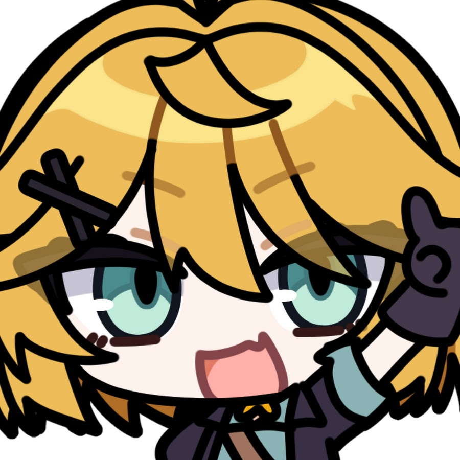

我的網站
首頁
關於
服務
聯絡
歡迎來到我的 RWD 範例網站
這是一個使用 Bootstrap 建立的簡單響應式頁面。
了解更多
了解
更多。
詳細介紹
鯊魚子Saba（英語：Sameko Saba，日語：さめこさば Sameko Saba) 是位美國個人勢英語虛擬YouTuber。2025年6月28日在YouTube進行首次直播， 僅在出道2天後的7月1日達成100萬訂閱里程碑，成為史上最快達成百萬訂閱的VTuber。
詳細介紹
Roara是Hololive EN正義組（Justice）的成員，角色設定是一位 擁有神之眼的藝術家，可以透過各種社交能力來獲取資訊進行調查。 她會按照收集到的資訊來進行臉部的肖像畫繪製並以高準確度聞名， 如今，她的目光轉向尋找新的披薩店，並享受遠東地區的流行文化。
詳細介紹
全名Doki "Maple" Bird，充滿活力，很愛笑，善於捉弄與嘲諷觀眾。 十分擅長FPS遊戲，如Apex與守望先鋒，水平很高。此外，也對復古遊戲感興趣。 擅長繪畫，曾經為刻晴、Gura、Undertale和她自己等繪製了一些同人圖片。
Saba
A very cute fish.
了解更多
Roara
A very big cat.
了解更多
Dokibird
A very generous bird.

了解更多